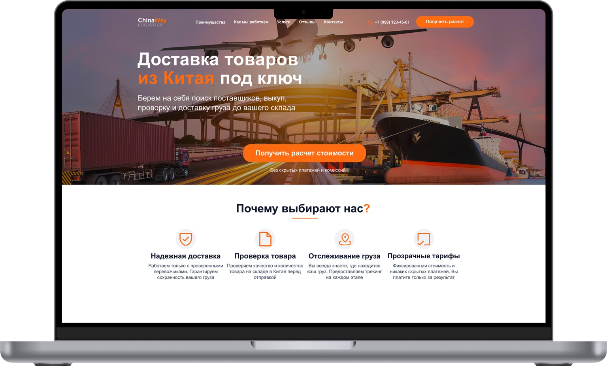
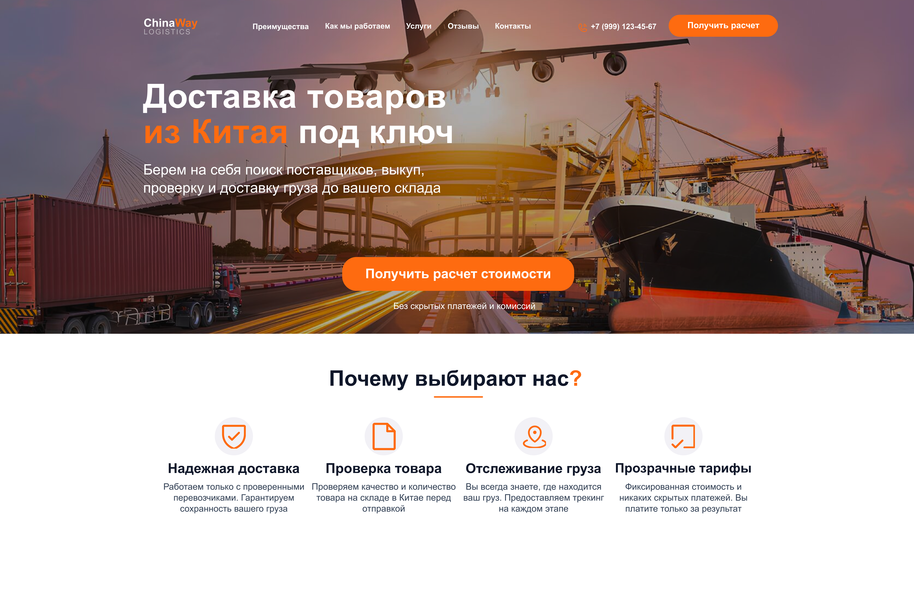
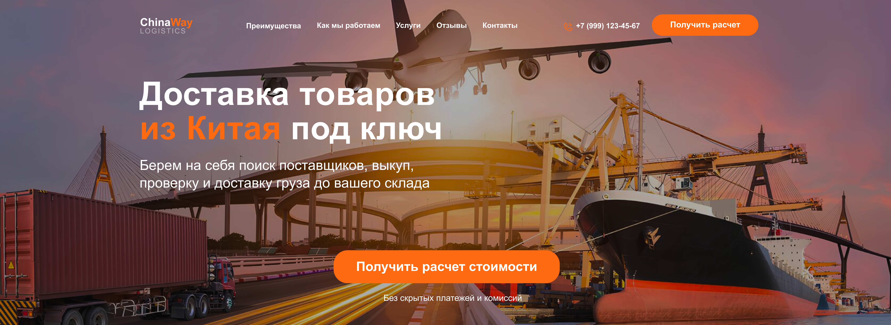
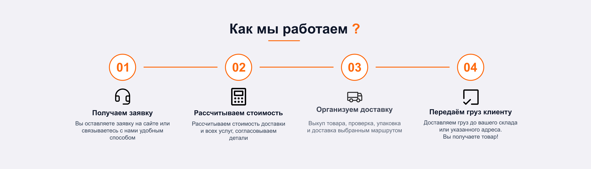
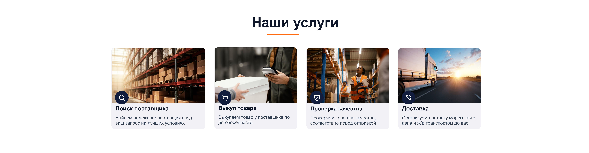
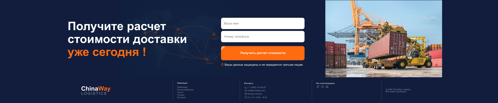

01 / ПЕРВАЯ ЗАКУПКА
Найти поставщика и понять весь путь
Клиенту важно увидеть, кто найдёт и проверит товар, что произойдёт после обращения и где заканчивается ответственность сервиса.
06 / B2B · UX/UI · TILDA
Лендинг доставки из Китая для предпринимателей, которые закупают товары. Он объясняет, что можно поручить сервису — от поиска поставщика до доставки на склад — и ведёт к запросу стоимости.


01 / Контекст
«Под ключ» звучит удобно, но не объясняет границы услуги. У предпринимателя без поставщика и у клиента с готовым заказом будут разные вопросы. Разбор лендинга показывает, что предложение подходит обоим; дальше важно помочь каждому узнать свой сценарий.
01 / ПЕРВАЯ ЗАКУПКА
Клиенту важно увидеть, кто найдёт и проверит товар, что произойдёт после обращения и где заканчивается ответственность сервиса.
02 / ПОСТАВЩИК УЖЕ ЕСТЬ
Клиент уже знает, что закупает. Ему важнее понять, какие этапы можно поручить отдельно и какие сведения подготовить для оценки доставки.
Это два проектных сценария для анализа страницы. Они помогают проверить, отвечает ли один лендинг на разные задачи клиентов.
02 / Карта сервиса
Карта сервиса связывает шаги на сайте с работой после заявки. Этапы взяты из лендинга, а действия команды и материалы для передачи описаны как модель для следующей версии.
| Этап | Что видит клиент | Что нужно команде |
|---|---|---|
| 01 · Запрос | Предложение, список услуг и короткая форма с именем и телефоном. | Понять задачу: поиск, выкуп, проверка или доставка. Запросить недостающие сведения. |
| 02 · Расчёт | Лендинг обещает расчёт и согласование деталей после обращения. | Уточнить товар, объём или вес, пункт назначения и услуги, которые входят в расчёт. |
| 03 · Доставка | Блок процесса объясняет, что после согласования сервис организует доставку. | Согласовать маршрут и ответственного за обновления по грузу. |
| 04 · Передача | Лендинг показывает конечную точку: склад или адрес клиента. | Подтвердить адрес, получателя и завершение доставки. |
Главный разрыв — между отправкой формы и расчётом: на странице видны два контактных поля, а вводные для оценки появляются только в разговоре. Подсказка перед отправкой могла бы помочь клиенту подготовиться, сохранив короткую форму.
03 / Реализованный интерфейс
Первый экран сообщает, что именно можно поручить. Блоки с услугами и этапами раскрывают состав работы, а форма оставляет минимум полей для первого контакта. В галерее — исходные экраны лендинга.

01 / ПЕРВЫЙ ЭКРАН
Клиент сразу видит направление доставки и основное действие. Оранжевая кнопка связывает первый экран с формой внизу.

02 / ПРОЦЕСС
Схема показывает, что после заявки идут расчёт, организация доставки и передача груза.

03 / УСЛУГИ
Поиск, выкуп, проверка и доставка вынесены в отдельные карточки: по ним можно понять, какие задачи закрывает сервис.

04 / ФОРМА
Форма открывает разговор о доставке. Она не собирает параметры партии, необходимые для расчёта.
Цифры и отзывы на исходном макете демонстрируют оформление этих блоков. Для коммерческого запуска их стоит заменить подтверждаемыми примерами поставок и отзывами клиентов.
04 / Интерактивная гипотеза
Чек-лист показывает, какие вводные пригодятся для обсуждения доставки. Выберите сценарий и отметьте, что уже известно. Это демонстрация следующей итерации: она не отправляет заявку и не рассчитывает тариф.
05 / Результат и следующий шаг
Готовый результат — лендинг на Tilda с предложением, этапами доставки, услугами и короткой формой. Следующая итерация проверяет, поможет ли подсказка сохранить лёгкий вход и сократить количество уточнений после заявки.
01 / ТЕСТ СЦЕНАРИЯ
Дать по одной задаче на поиск поставщика и доставку готовой партии. Попросить найти нужную услугу, начать заявку и своими словами описать следующий шаг.
02 / СРАВНЕНИЕ ВАРИАНТОВ
Сравнить текущую форму с вариантом «форма + подсказка». Смотреть на долю завершённых заявок и на то, хватает ли данных после первого контакта, чтобы перейти к оценке.